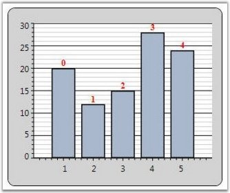
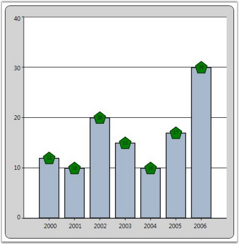
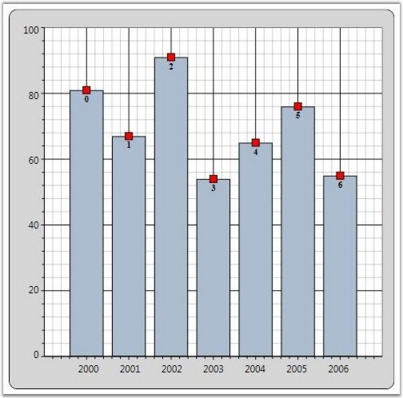
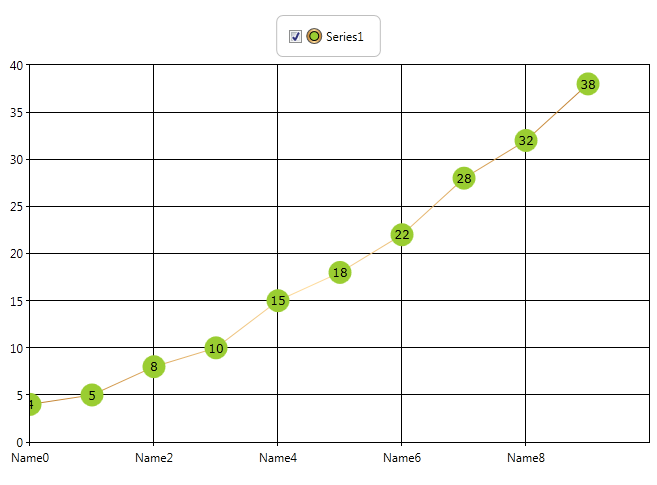
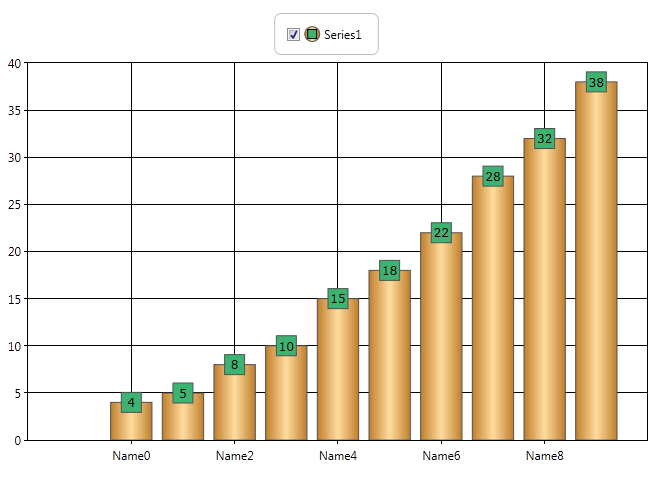
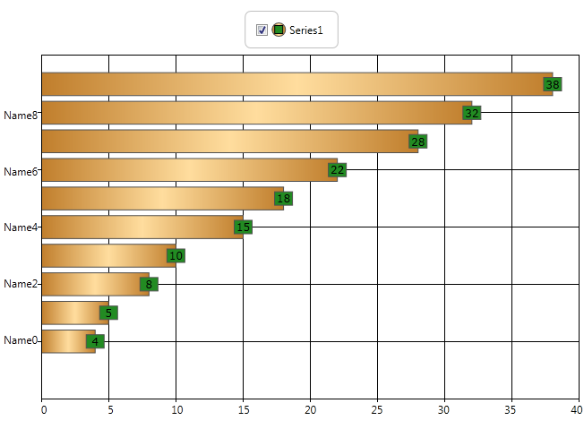
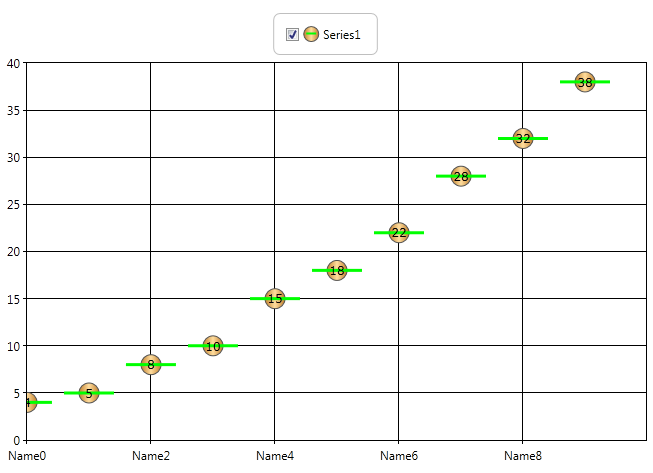

Chart Series Adornments are used to display values in a Chart Segment related to it. Values from data points (x value, y value) or other properties from a data source can be displayed. ChartAdornmentsInfo class is used to display Chart Series Adornments. ChartAdornmentsInfo class provides the following properties to customize the chart series adornments.
Table 14: Property Table
|
Property |
Description |
|
LabelContentPath |
specifies the value to display in the Adornments For example, to display the x value, LabelContentPath will be DataPoint.X. |
|
Symbol |
allows selecting one symbol among the eleven predefined symbols or custom symbol options |
|
SymbolInterior |
specifies the interior of the predefined symbols added to the adornments |
|
SymbolHeight |
specifies the height of the predefined symbols added to the adornments |
|
SymbolWidth |
specifies the width of the predefined symbols added to the adornments |
|
SymbolTemplate |
specifies the symbol to be displayed in the adornments when the Symbol property is set to Custom |
|
VerticalAlignment |
specifies the Vertical alignment of the Adornment text |
|
HorizontalAlignment |
specifies the Horizontal alignment of the adornments |
|
LabelTemplate |
customizes the look and feel of the adornments being displayed |
The following code example illustrates how to display adornments in a Chart Series.
|
[XAML]
<Window.Resources> <!--Chart Series Data--> <XmlDataProvider x:Key="myXmlData"> <x:XData> <Products xmlns=""> <Product Sales="20" Projected="30" Month="1"/> <Product Sales="12" Projected="28" Month="2"/> <Product Sales="15" Projected="29" Month="3"/> <Product Sales="28" Projected="33" Month="4"/> <Product Sales="24" Projected="30" Month="5"/> </Products> </x:XData> </XmlDataProvider> <!--ChartAdornmentInfo LabelTemplate--> <DataTemplate x:Key="Lbltxt1"> <TextBlock Name="TB1" Text ="{Binding}" FontSize="13" Foreground="Red" TextAlignment="Justify" VerticalAlignment="Center" FontWeight="Bold" /> </DataTemplate> </Window.Resources>
<!--Chart with Adornments--> <sfchart:Chart> <sfchart:ChartArea Background="LightGray" GridBackground="White"> <sfchart:ChartArea.PrimaryAxis> <sfchart:ChartAxis sfchart:ChartArea.ShowGridLines="False" /> </sfchart:ChartArea.PrimaryAxis> <sfchart:ChartSeries Type="Column" DataSource="{Binding Source={StaticResource myXmlData}, XPath=Products/Product}" BindingPathX="Month" BindingPathsY="Sales" Interior="LightSkyBlue" Stroke="Black" StrokeThickness="1.5"> <sfchart:ChartSeries.AdornmentsInfo> <sfchart:ChartAdornmentInfo LabelTemplate="{StaticResource Lbltxt1}" LabelContentPath="DataPoint.X" Visible="True" VerticalAlignment="Top" /> </sfchart:ChartSeries.AdornmentsInfo> </sfchart:ChartSeries> </sfchart:ChartArea> </sfchart:Chart> |
|
[C#]
ChartSeries series = Chart1.Areas[0].Series[0]; ChartAdornmentInfo adornments = series.AdornmentsInfo; adornments.LabelContentPath = "DataPoint.X"; adornments.LabelTemplate = this.Resources["Lbltxt1"] as DataTemplate; adornments.Visible = true; adornments.VerticalAlignment = VerticalAlignment.Top; |

Figure 88: Chart Data Points with Adornments
Symbol Template for Chart Adornment
The following Symbol Templates can be set for ChartAdornmentInfo.
· Predefined Symbol Template (set from one among the twelve predefined symbols)
· Custom Template (custom Data Template set by users)
Predefined Symbol Template
You can set any one of the following predefined symbols for ChartAdornmentInfo.
· Cross
· Diamond
· Ellipse
· Hexagon
· HorizontalLine
· InvertedTriangle
· Pentagon
· Plus Square
· Triangle
· VerticalLine
The following code example illustrates how to apply predefined symbol templates to chart adornments.
|
[XAML]
<Syncfusion:ChartSeries Type="Column" DataSource="{StaticResource collection1}" BindingPathX="X" BindingPathsY="Y" IsIndexed="True" Stroke="Black" StrokeThickness="1.5"> <Syncfusion:ChartSeries.AdornmentsInfo> <Syncfusion:ChartAdornmentInfo Visible="True" Symbol="Pentagon" SymbolInterior="Green" SymbolHeight="25" SymbolWidth="25" /> </Syncfusion:ChartSeries.AdornmentsInfo> </Syncfusion:ChartSeries> |
|
[C#]
series1.AdornmentsInfo.Visible = true; series1.AdornmentsInfo.Symbol = Symbol.Pentagon; series1.AdornmentsInfo.SymbolInterior = Brushes.Green; series1.AdornmentsInfo.SymbolHeight = 25; series1.AdornmentsInfo.SymbolWidth = 25; |

Figure 89: Chart Adornments with "Pentagon" Symbol Template
Custom Symbol Template
The following code example illustrates how to apply custom symbol templates to chart adornments.
|
[XAML]
<Window.Resources> <local:ProductSalesCollection x:Key="SeriesData1"/> <DataTemplate x:Key="Lbltxt1"> <TextBlock Name="TB1" Text ="{Binding}" FontSize="11" Foreground="Black" TextAlignment="Justify" VerticalAlignment="Center" FontWeight="Bold"> </TextBlock> </DataTemplate> <DataTemplate x:Key="SymbolTemplate"> <Rectangle Stroke="Black" Fill="Red" Width="10" Height="10"/> </DataTemplate> </Window.Resources>
<sfchart:Chart> <sfchart:ChartArea> <sfchart:ChartSeries Type="Area" DataSource="{StaticResource SeriesData1}" BindingPathX="Year" BindingPathsY="Sales" Interior="LightCoral" Stroke="Black" StrokeThickness="1.5"> <sfchart:ChartSeries.AdornmentsInfo> <sfchart:ChartAdornmentInfo SymbolTemplate="{StaticResource SymbolTemplate}" LabelTemplate="{StaticResource Lbltxt1}" LabelContentPath="DataPoint.X" Visible="True" VerticalAlignment="Top"/> </sfchart:ChartSeries.AdornmentsInfo> </sfchart:ChartSeries> </sfchart:ChartArea> </sfchart:Chart> |
|
[C#]
ChartSeries series = new ChartSeries(); series.DataSource = new ProductSalesCollection(); series.BindingPathX = "Year"; series.BindingPathsY = new string[] { "Sales" }; series.Stroke = Brushes.Black; series.StrokeThickness = 1d; Chart1.Areas[0].Series.Add(series); ChartAdornmentInfo adornments = series.AdornmentsInfo; adornments.LabelContentPath = "DataPoint.X"; adornments.LabelTemplate = this.Resources["Lbltxt1"] as DataTemplate; adornments.Visible = true; adornments.VerticalAlignment = VerticalAlignment.Bottom; adornments.SymbolTemplate = this.Resources["SymbolTemplate"] as DataTemplate; |

Figure 90: Chart Adornments with Custom Symbol Template
This feature helps the user use adornments in fastchart types too. Considering the performance of Fastchart types, only limited adornment support for fastchart types have been provided.
· Limited adornment symbols are supported for Fastchart types. They are
o Ellipse
o Square
o Horizontal line
o Vertical line
· Symbol interior can be changed.
· Symbol height and width can be changed.
Use Case Scenarios
Most fastchart types are used in stock market charts. Users can display the data of the point in the adornment.

Figure 91: FastLine Chart

Figure 92: FastColumn Chart

Figure 93: FastBar Chart

Figure 94: FastScatter Chart
Sample Link
Essential Chart WPF > Chart Series > Adornments Configuration Demo
Adding Fastchart Types with Adornments to an Application
|
[XAML] <Syncfusion:ChartSeries.AdornmentsInfo> <Syncfusion:ChartAdornmentInfo Visible="True" Symbol="Ellipse" SymbolInterior="Red" SymbolHeight="20" SymbolWidth="20" /> </Syncfusion:ChartSeries.AdornmentsInfo> </Syncfusion:ChartSeries>
[C#] series1.AdornmentsInfo.Visible = true; series1.AdornmentsInfo.Symbol = Symbol.Ellipse; series1.AdornmentsInfo.SymbolInterior = Brushes.Red; series1.AdornmentsInfo.SymbolHeight = 20; series1.AdornmentsInfo.SymbolWidth = 20; |
See Also